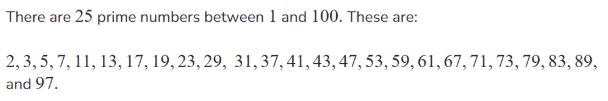

Prime Numbers
Definition
A Prime Number is a whole number that is greater than 1, that has exactly two factors 1 and the number itself.
For Example 11 is only divisible by 1 and 11. It also needs to be a positive number. The opposite of a prime number is a composite number (more than 2 factors).

Key points to remember
- It must be a whole number
- Must be greater than 1
- Exactly two distinct divisors.
Note: 1 is NOT a prime number. To be a prime number, it should have exactly two factors, 1 only has itself.
Examples
| Number | Factors | Prime? |
|---|---|---|
| 2 | 1,2 | Yes |
| 3 | 1,3 | Yes |
| 4 | 1,2,4 | No |
| 7 | 1,7 | Yes |
Prime Numbers Quiz
1. Is 53 a prime number?
Answer: Yes
2. Is 223 a prime number?
Answer: Yes
3. List the Prime Numbers between 50 and 60?
Answer: 53, 59
4. Which of the following is a prime number?
13, 15, 21
Answer: 13
5. How many prime numbers are there between 10 and 25?
5, 4, 7
Answer: 5